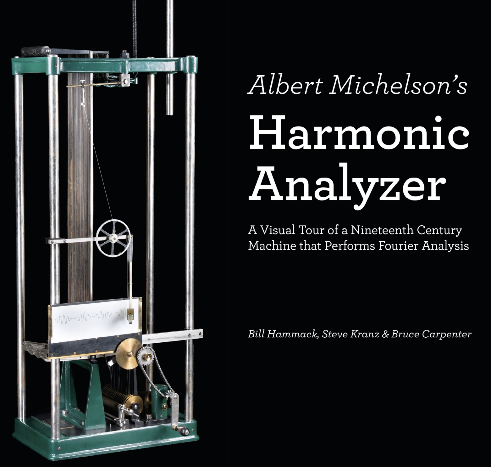
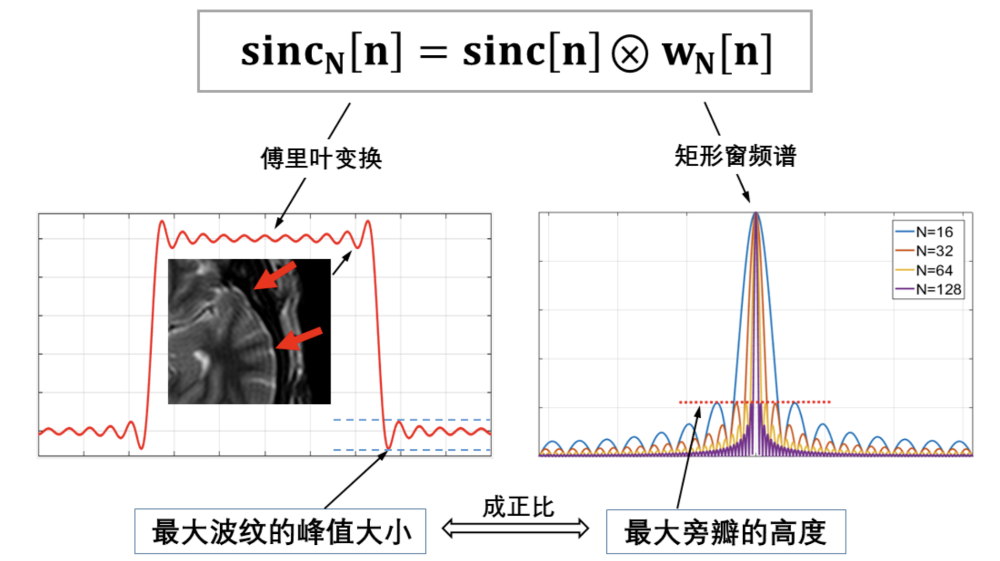
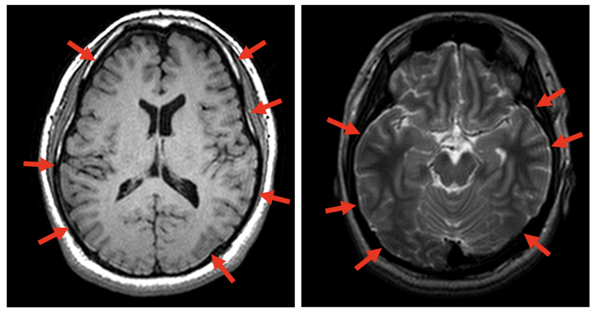

Gibbs效应¶
吉布斯现象¶
In mathematics, the Gibbs phenomenon, discovered by Henry Wilbraham (1848)[1] and rediscovered by J. Willard Gibbs (1899),[2] is the peculiar manner in which the Fourier series of a piecewise continuously differentiable periodic function behaves at a jump discontinuity. The nth partial sum of the Fourier series has large oscillations near the jump, which might increase the maximum of the partial sum above that of the function itself. The overshoot does not die out as n increases, but approaches a finite limit.[3]
简单的说，也就是利用傅里叶级数描述分段连续可微周期函数的时候，会在间断点处出现很大的一个振荡，并且这个振荡并不会随着级数的阶数增加而减小，而是趋于一个恒定的值。
上面三幅图，分别是10、50、250阶傅里叶级数叠加得到波形图，可以发现，随着阶数的增加，振荡始终存在。
历史¶
The Gibbs phenomenon was first noticed and analyzed by Henry Wilbraham in a 1848 paper.[5] The paper attracted little attention until 1914 when it was mentioned in Heinrich Burkhardt’s review of mathematical analysis in Klein’s encyclopedia.[6] In 1898, Albert A. Michelson developed a device that could compute and re-synthesize the Fourier series.[7][8] A widespread myth says that when the Fourier coefficients for a square wave were input to the machine, the graph would oscillate at the discontinuities, and that because it was a physical device subject to manufacturing flaws, Michelson was convinced that the overshoot was caused by errors in the machine. In fact the graphs produced by the machine were not good enough to exhibit the Gibbs phenomenon clearly, and Michelson may not have noticed it as he made no mention of this effect in his paper (Michelson & Stratton 1898) about his machine or his later letters to Nature.[1] Inspired by some correspondence in Nature between Michelson and Love about the convergence of the Fourier series of the square wave function, in 1898 J. Willard Gibbs published a short note in which he considered what today would be called a sawtooth wave and pointed out the important distinction between the limit of the graphs of the partial sums of the Fourier series, and the graph of the function that is the limit of those partial sums. In his first letter Gibbs failed to notice the Gibbs phenomenon, and the limit that he described for the graphs of the partial sums was inaccurate. In 1899 he published a correction in which he described the overshoot at the point of discontinuity (Nature: April 27, 1899, p. 606). In 1906, Maxime Bôcher gave a detailed mathematical analysis of that overshoot, coining the term “Gibbs phenomenon”[9] and bringing the term into widespread use.
After the existence of Henry Wilbraham’s paper became widely known, in 1925 Horatio Scott Carslaw remarked “We may still call this property of Fourier’s series (and certain other series) Gibbs’s phenomenon; but we must no longer claim that the property was first discovered by Gibbs.”
为了不影响大家对Gibbs效应这个小小历史的理解，这里我仍然把他的发现，以及中间乌龙，最后被Gibbs解释的过程，从英文原版复制在这里。并且，为了帮助理解，将上述历史可以梳理成下表：
| 时间 | 人物 | 贡献 | 相关论文 |
|---|---|---|---|
| 1848 | Henry Wilbraham | 首次发现了吉布斯现象 | Wilbraham, Henry (1848) "On a certain periodic function," The Cambridge and Dublin Mathematical Journal, 3 : 198–201. |
| 1898 | Albert A. Michelson | 发明了一个可以计算和合成傅里叶级数的装置 | Michelson, A. A.; Stratton, S. W. (1898), "A new harmonic analyser", Philosophical Magazine, 5 (45): 85–91 |
| 1898以前 | 大多数科研人员 | 认为Gibbs是因为设备精度问题导致的 | Michelson没有深究，也就认为是这样（错失了吉布斯现象的冠名权），甚至在论文发表的时候，"无意间"回避了这个问题。 |
| 1898 | J. Willard Gibbs | 部分傅里叶级数存在过冲，但是部分傅里叶级数的极限不存在过冲（真绕） | Gibbs, J. Willard (1898), "Fourier's Series", Nature, 59 (1522): 200 |
| 1899 | J. Willard Gibbs | 准确解释了不连续点处的过冲问题 | Gibbs, J. Willard (1899), "Fourier's Series", Nature, 59 (1539): 606 |
| 1906 | M. Bocher | 完整的证明了Gibbs现象，并且给这个现象起了个名字：Gibbs Phenomenon | M. Bocher, Introduction to the theory of Fourier series, Ann. Math., 7 (1906), 81–152. |
| 1914 | Heinrich Burhardt | 将Gibbs现象收录到德国数学百科Klein's encyclopedia | Encyklopädie der Mathematischen Wissenschaften mit Einschluss ihrer Anwendungen (PDF). Vol II T. 1 H 1. Wiesbaden: Vieweg+Teubner Verlag. 1914. p. 1049. |
让我们来瞻仰一下人生赢家：Gibbs大人的第一篇(1898)论文的开篇：
I SHOULD like to add a few words concerning the subject of Prof. Michelson’s letter in NATURE of October 6. In the only reply which I have seen (NATURE, October 13), the point of view of Prof. Michelson is hardly considered.
- J. Willard Gibbs
再看看Gibbs大人的第二篇（1899）论文的开篇：
I SHOULD like to correct a careless error which I made (NATURE, December 29, 1898) in describing the limiting form of the family of curves represented by the equation as a zigzag line consisting of alternate inclined and vertical portions. The inclined portions were correctly given, but the vertical portions, which are bisected by the axis of X, extend beyond the points where they meet the inclined portions, their total lengths being expressed by four times the definite integral .
- J. Willard Gibbs
同时，也为首次发现吉布斯现象的Henry Wilbraham教授和发明了谐波分析器（下图，Michelson谐波分析器还有很详细的说明）的Albert Michelson教授表示感谢。不过，值得一提的是，Michelson教授以“发明光学干涉仪并使用其进行光谱学和基本度量学研究”而成为美国第一个诺贝尔物理学奖获得者。

讲到这里，大家也许会有所疑问，Gibbs现象到底是怎么产生的？我们能不能消除吉布斯现象呢？那么在解释原理之前，我们先看看Gibbs现象会带来什么问题？从而了解我们要分析Gibbs现象的必要性。
Gibbs现象带来的影响：振荡¶
在信号处理中，吉布斯现象通常被认为是处理带来的干扰，需要被去除掉。比如，过冲或者由于振荡产生的振铃效应。另外，在滤波器设计中，由于窗函数引入导致的间断点问题，也会引发Gibbs现象，从而引起通带和阻带的振荡。

另外，在MRI成像（一种非侵入式医学成像方法）中，对于邻接区域存在跳变的地方，其频谱分布在整个频域；但是MRI只能采集有限个频率分量，即等效于在频域加了个窗产生了不连续点，这样反变换到时域中，就出现了类似滤波器设计的问题。只不过这里是频域有间断点，滤波器设计是时域有间断点。

所以说，分析Gibbs产生的原理，以及研究消除Gibbs现象的方法，是很有必要的。